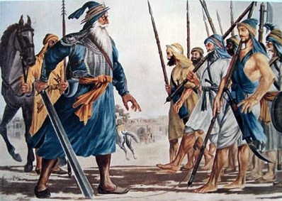

One could argue the Misl Era is by far the bloodiest in Panjab's History.
The Sikh Misl era was a period of Sikh history that lasted from the early 18th century to the late 18th century.
During this time, various Sikh Misls or confederacies emerged as powerful political and military forces in the land
of five rivers. The Sikh Misls were led by charismatic leaders who were able to mobilize large numbers of
followers and establish their own territories. These leaders included prominent figures such as Banda Singh Bahadur,
Nawab Kapur Singh, Jassa Singh Ahluwalia, Sukha Singh Mari Kambo, Jassa Singh Ramgarhia. The Sikh Misls
were instrumental in resisting the oppressive rule of the Mughal Empire and later the Afghans. They fought
numerous battles and engaged in guerrilla warfare to defend their territories and expand their influence.The Sikh Misls also played a crucial role in the
emergence of the Sikh Empire, which was founded by Maharaja Ranjit Singh in the early 19th century. The legacy of
the Sikh Misls is still celebrated by Sikhs today as a symbol of their resilience, bravery, and dedication to
justice and uprooting tyranny where ever it stands.
